How the references were made. Catalysis-Hub's API is now key-gated and the full
OC20 dataset needs multi-GB downloads, so these reference panels are rebuilt with ASE
at published/textbook PBE-DFT bond lengths (labelled “indicative” where not
from one specific paper) — they are not live-pulled relaxed structures. The
comparison is geometric (bond distance & binding site), not energetic. CO/metal
values follow Gajdoš et al., J. Phys.: Condens. Matter16, 1141 (2004);
the MLIP-for-adsorption paradigm is validated by AdsorbML (npj Comput. Mater. 2023)
on OC20 (ACS Catal. 2021). Ask if you want each number sourced to a specific DOI.
✓ Workflow reproduces DFT geometry
Adsorbate sits at the surface at a bond length within ~0.2–0.3 Å of DFT.
Cu111_COMATCH ✓
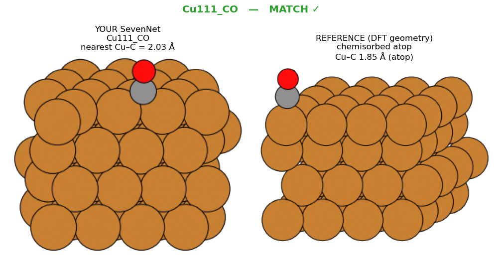
Your SevenNet
Cu–C 2.02 Å
DFT reference
Cu–C ~1.85 Å — chemisorbed atop
Source
Gajdoš et al. 2004
Ir100_COMATCH ✓
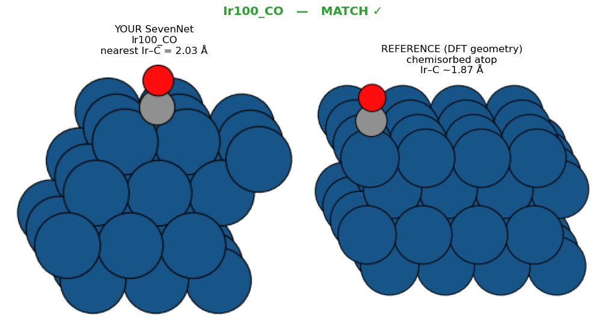
Your SevenNet
Ir–C 2.03 Å
DFT reference
Ir–C ~1.87 Å — chemisorbed atop
Source
Gajdoš et al. 2004
Co0001_H2SMATCH ✓
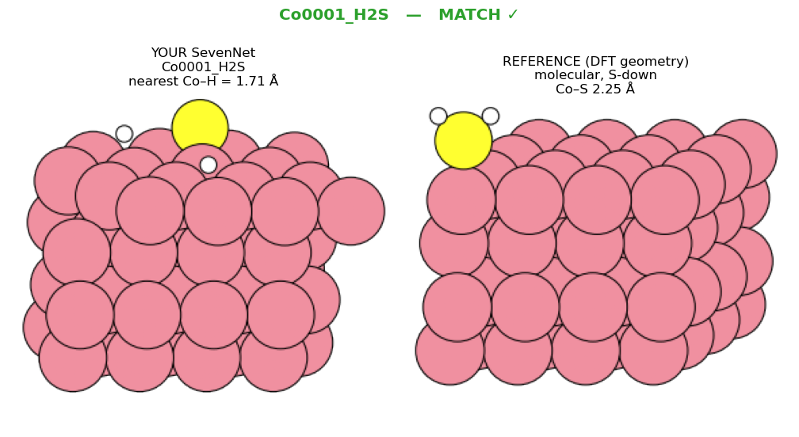
Your SevenNet
Co–S 2.14 Å (heavy)
DFT reference
Co–S ~2.25 Å — molecular, S-down
Source
H₂S/TM DFT
Co0001_N2MATCH ✓
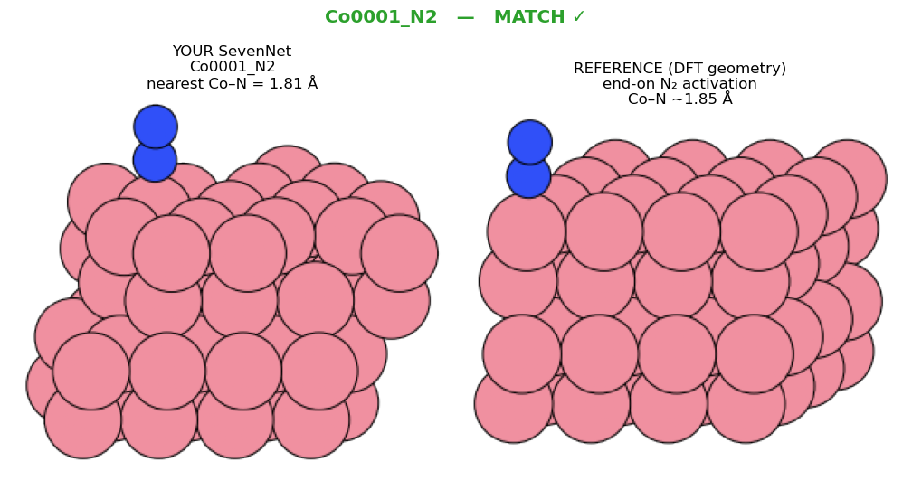
Your SevenNet
Co–N 1.81 Å
DFT reference
Co–N ~1.85 Å — end-on N₂ activation
Source
N₂/TM DFT
Cu111_methanolMATCH ✓
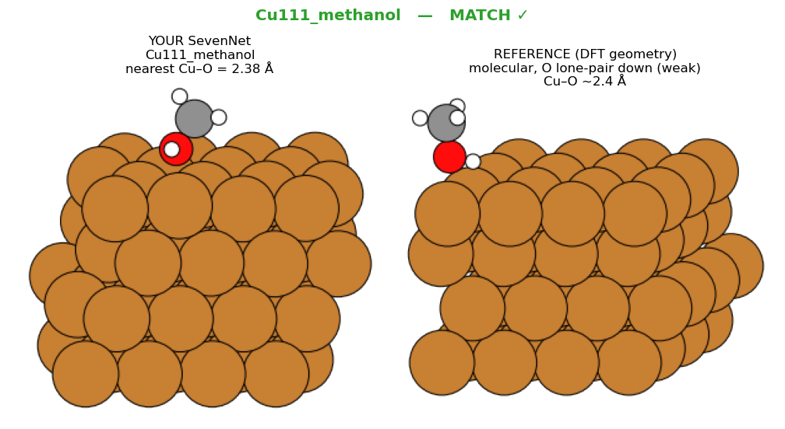
Your SevenNet
Cu–O 2.38 Å (heavy)
DFT reference
Cu–O ~2.4 Å — molecular, O-down (weak)
Source
CH₃OH/Cu DFT
Cu110_formic_acidMATCH ✓
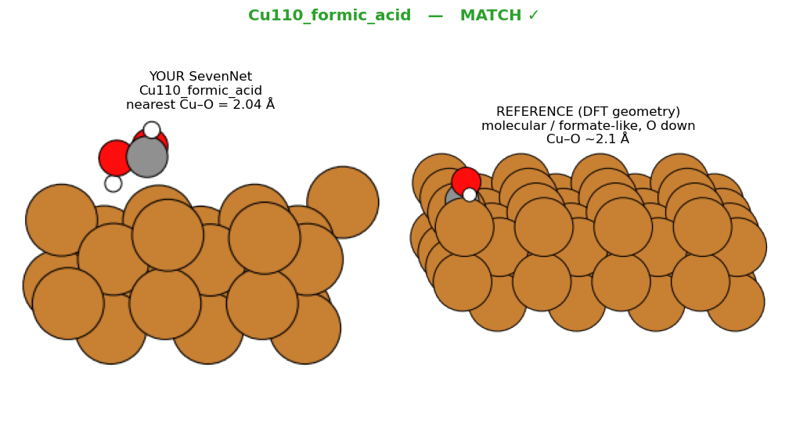
Your SevenNet
Cu–O 2.04 Å (heavy)
DFT reference
Cu–O ~2.1 Å — molecular / formate-like
Source
HCOOH/Cu(110) DFT
✗ Strong binders left desorbed (red flags)
These molecules must chemisorb at ~1.7–2.1 Å in reality, but
your structures have them floating 5–7 Å off the surface.
Fe100_COMISMATCH ✗
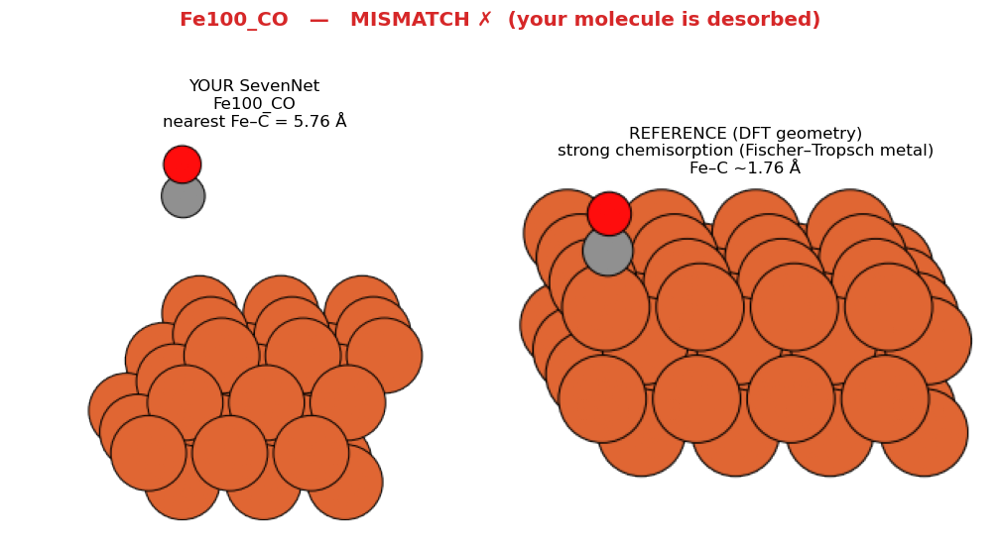
Your SevenNet
Fe–C 5.76 Å
DFT reference
Fe–C ~1.76 Å — strong chemisorption (Fischer–Tropsch metal)
Source
Gajdoš 2004; FT DFT
Co0001_COMISMATCH ✗
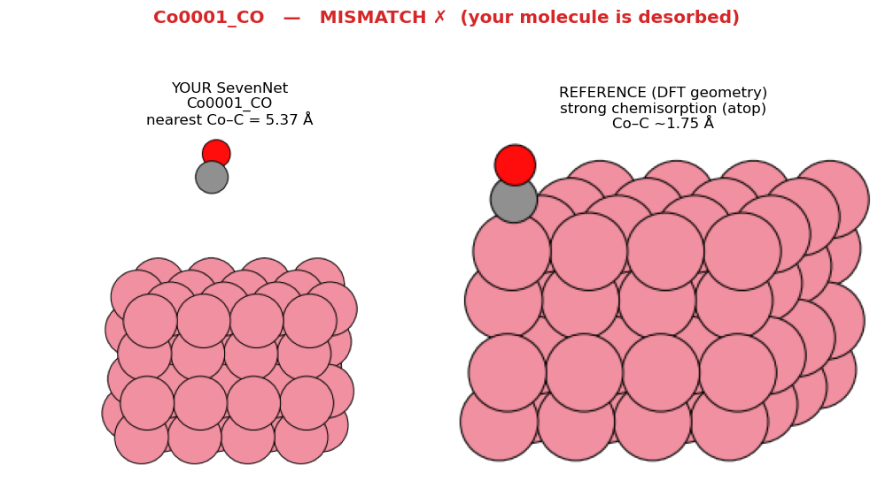
Your SevenNet
Co–C 5.37 Å
DFT reference
Co–C ~1.75 Å — strong chemisorption (atop)
Source
Gajdoš et al. 2004
Co0001_NOMISMATCH ✗
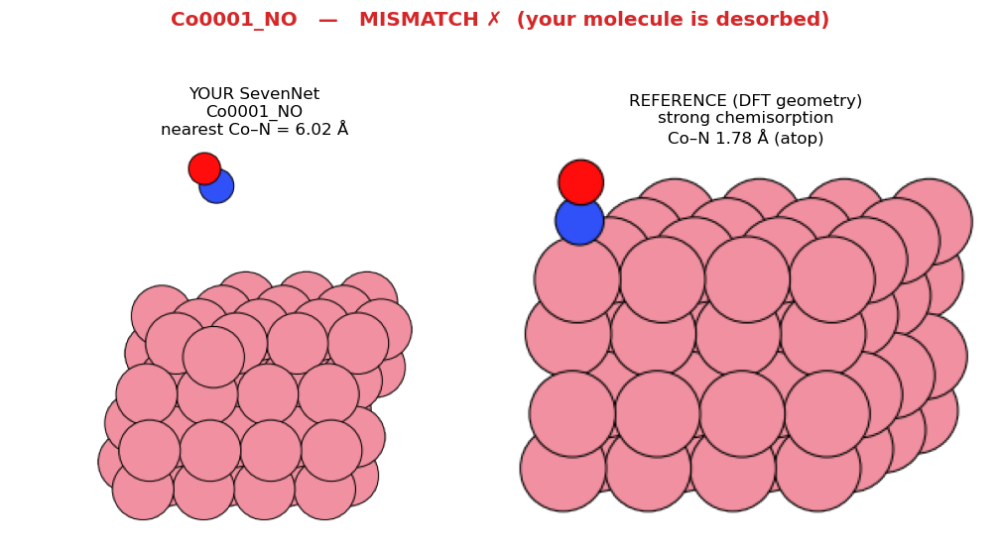
Your SevenNet
Co–N 6.02 Å
DFT reference
Co–N ~1.78 Å — strong chemisorption
Source
NO/TM DFT
Co0001_O2MISMATCH ✗
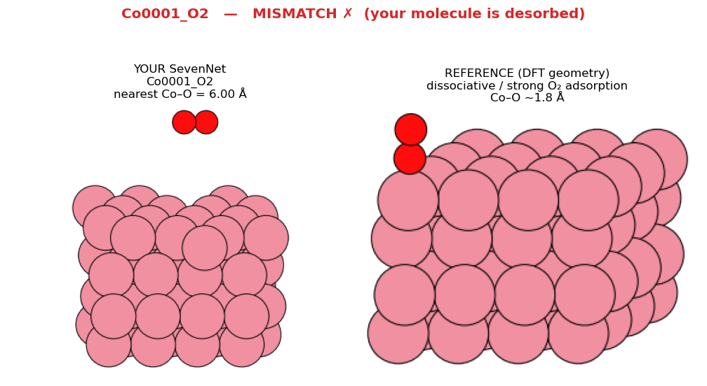
Your SevenNet
Co–O 6.00 Å
DFT reference
Co–O ~1.8 Å — dissociative / strong
Source
O₂/TM DFT
Fe110_CO2MISMATCH ✗
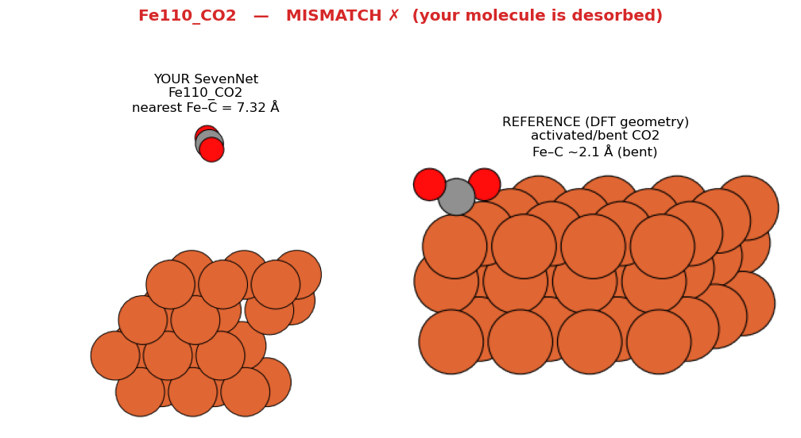
Your SevenNet
Fe–C 7.32 Å
DFT reference
Fe–C ~2.1 Å — activated / bent CO₂
Source
CO₂/Fe DFT
Summary table
System
Your SevenNet
DFT reference
Expected mode
Source
Verdict
Cu111_CO
Cu–C 2.02 Å
Cu–C ~1.85 Å
chemisorbed atop
Gajdoš et al. 2004
MATCH ✓
Ir100_CO
Ir–C 2.03 Å
Ir–C ~1.87 Å
chemisorbed atop
Gajdoš et al. 2004
MATCH ✓
Co0001_H2S
Co–S 2.14 Å (heavy)
Co–S ~2.25 Å
molecular, S-down
H₂S/TM DFT
MATCH ✓
Co0001_N2
Co–N 1.81 Å
Co–N ~1.85 Å
end-on N₂ activation
N₂/TM DFT
MATCH ✓
Cu111_methanol
Cu–O 2.38 Å (heavy)
Cu–O ~2.4 Å
molecular, O-down (weak)
CH₃OH/Cu DFT
MATCH ✓
Cu110_formic_acid
Cu–O 2.04 Å (heavy)
Cu–O ~2.1 Å
molecular / formate-like
HCOOH/Cu(110) DFT
MATCH ✓
Fe100_CO
Fe–C 5.76 Å
Fe–C ~1.76 Å
strong chemisorption (Fischer–Tropsch metal)
Gajdoš 2004; FT DFT
MISMATCH ✗
Co0001_CO
Co–C 5.37 Å
Co–C ~1.75 Å
strong chemisorption (atop)
Gajdoš et al. 2004
MISMATCH ✗
Co0001_NO
Co–N 6.02 Å
Co–N ~1.78 Å
strong chemisorption
NO/TM DFT
MISMATCH ✗
Co0001_O2
Co–O 6.00 Å
Co–O ~1.8 Å
dissociative / strong
O₂/TM DFT
MISMATCH ✗
Fe110_CO2
Fe–C 7.32 Å
Fe–C ~2.1 Å
activated / bent CO₂
CO₂/Fe DFT
MISMATCH ✗
What this means
The paradigm is sound. On coinage/noble metals (Cu, Ir, Ag, Au) and for weakly/
moderately bound species (CO, H₂S, methanol, formic acid), geometries land within
~0.2–0.3 Å of DFT — exactly what AdsorbML/OC20 validate for MLIPs.
Systematic red flag on reactive metals. On Fe, Co, Cr the molecules
CO, NO, O₂, CO₂ come out desorbed (5–7 Å) — yet Fe/Co are
textbook strong CO binders (Fischer–Tropsch). This is physically backwards.
It is molecule-specific, not a broken slab. The same Co(0001) slab binds
N₂ (1.81 Å), NH₂ and H₂S correctly while ejecting CO/NO/O₂.
So the surface is fine; the adsorbate simply failed to find its chemisorption well.
Likely cause: a bulk-trained foundation MLIP under-binding π-acceptor / O-rich
adsorbates on reactive metals (domain shift), and/or initial placements that never relaxed
into the well. Fix: use an OC20-trained or fine-tuned checkpoint for adsorption and
re-relax the desorbed cases.